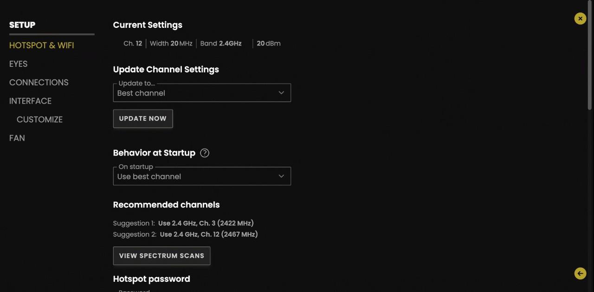
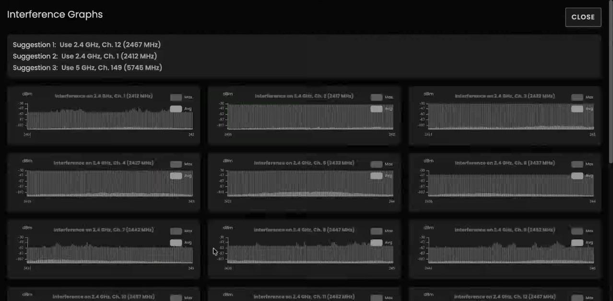
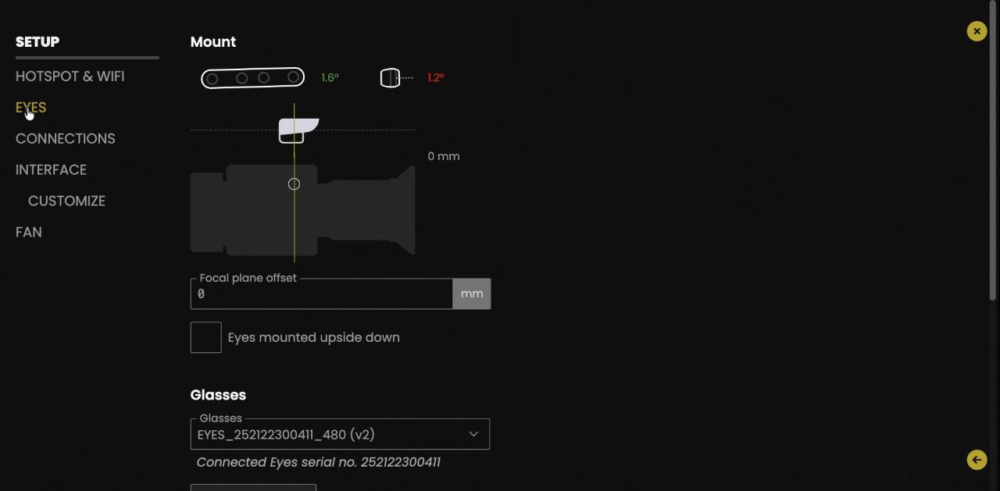
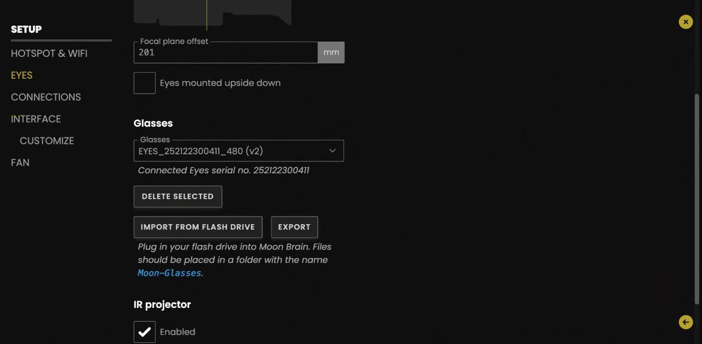
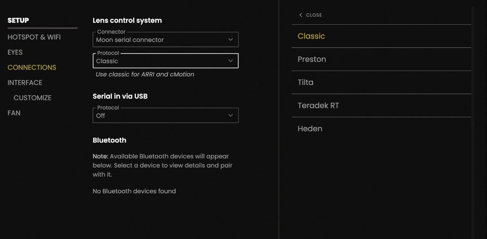
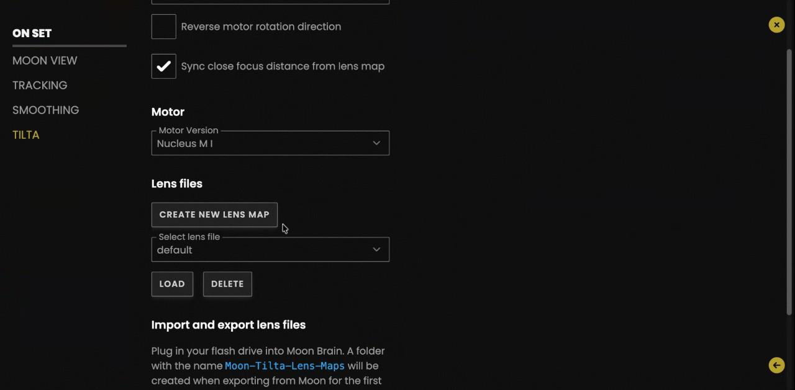
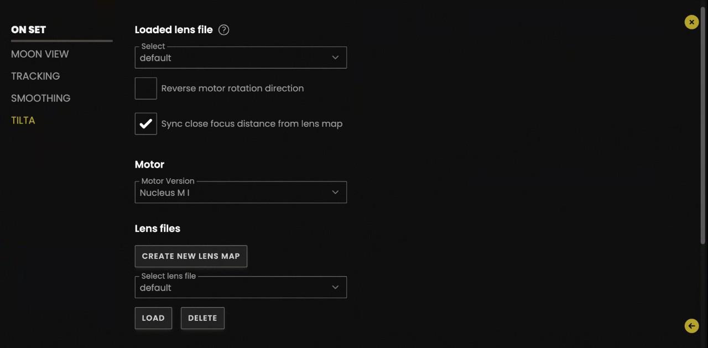
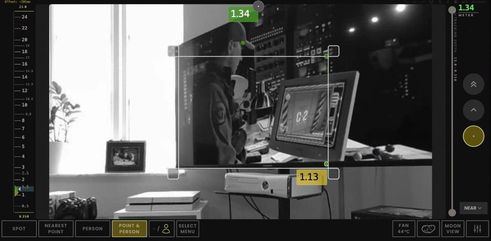
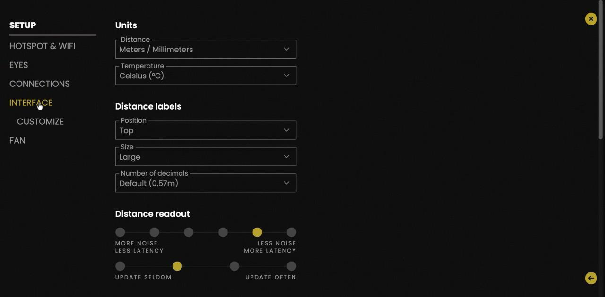
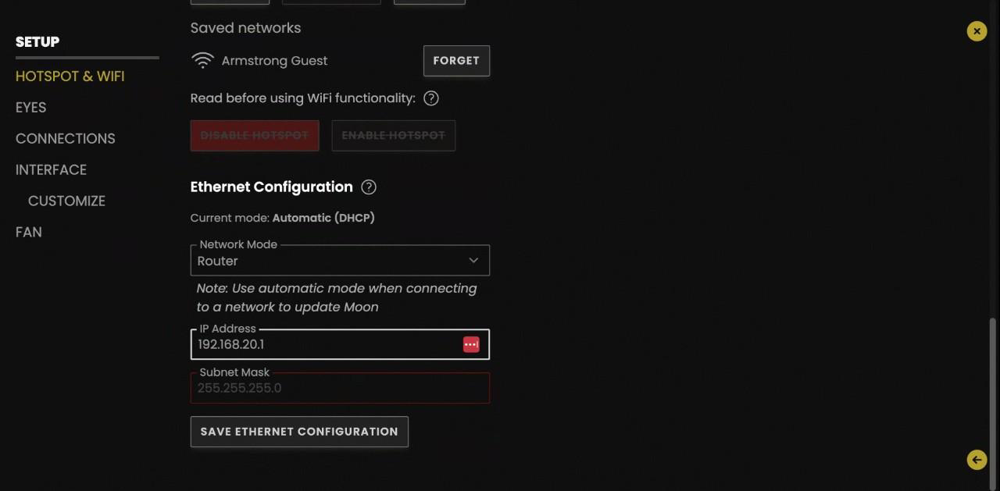

CONFIGURACIÓN
RÁPIDA →
MOON SMART
FOCUS.
Una guía corta y directa de cómo configurar, manejar y reboot el sistema Moon en un alquiler LENSO —
Tres piezas.
Una cadena de señal.
Cada kit Moon se compone de los Eyes (sensor 3D montado encima del objetivo), el Brain (procesado, Wi-Fi y salida serial al LCS) y la App (control, también funciona en iPad o cualquier navegador). Saber qué hace cada pieza hace la configuración y diagnóstico en el set inmediata.
Eyes
Sensor 3D Intel RealSense, calibrado de fábrica con un fichero único llamado "glasses". Captura un mapa de profundidad 30 veces por segundo. Proyector IR efectivo hasta 4 m en escenas de baja luz.
Brain
Carcasa de aluminio anodizado. Hospeda el hotspot Wi-Fi, ejecuta los algoritmos de tracking y envía los datos de distancia al LCS por cable serial.
App
Se entrega con un Sony PDT-FP1 . Múltiples dispositivos pueden conectarse al mismo tiempo — útil para flujos DP-en-monitor + AC-en-handset.
MONTAJE
Un montaje estándar ARRI. El Brain se alimenta de datos del LCUBE, el cual controla los motores del objetivo, y una línea limpia de 12 V mantiene estable el Brain. Siempre alimenta el Brain por su cuenta — compartir el D-tap de la cámara es la forma más fácil de provocar las caídas de tensión descritas en la sección 04.
Eyes → Cámara
Montado encima del objetivo, USB-C al Brain.
Cámara → Motores
Cable de la cámara al primer motor del objetivo.
Brain → LCUBE
Cable serial. Selecciona el protocolo en la UI Moon.
Motores → LCUBE
Daisy-chain entre motores; una sola línea sale al LCUBE.
Alimentación extra
12 V dedicada al Brain — nunca compartida.
CINCO PASOS AL ARRANQUE.
Ejecuta estos pasos en orden en cada montaje nuevo. Debería tomar menos de diez minutos.
Alimenta el Brain — limpio y estable
El Brain necesita 12,5 V a 2 A mínimo. Por debajo de eso verás caídas de conexión aleatorias o un estado "no se puede target" que parece un bug del software, pero no lo es.
- Usa una línea de alimentación dedicada — no encadenes desde el D-tap de la cámara. Recomendamos alimentar por Fischer 3 pin y como segunda opción, Dtap.
- Arranca el Brain antes de conectar la App, para que el escaneo de canal Wi-Fi pueda completarse (~30 s).
Wi-Fi — deja que elija el mejor canal
El hotspot Moon ofrece 2,4 GHz y 5 GHz. En set, los conflictos con Teradek y luminarias son la norma, no la excepción.
- Settings → Wi-Fi → activa Update to best channel (escanea ambas bandas al arrancar).
- Si aparece lag durante el rodaje, lanza un escaneo manual. Espera ~30 s. Elige el canal con menos blanco en el espectro (blanco = intensidad media de señal).
- Moon no salta de canal automáticamente. Pulsa Update Now si un Teradek cercano empieza a saltar.
- Pérdida total de conexión → desconecta y reconecta la alimentación del Brain. Más rápido que cualquier otra solución.


Offset del plano focal — la única calibración crítica
Mide desde el plano del sensor de los Eyes hasta el plano focal de la cámara, en milímetros. Introdúcelo en Settings → Eyes → Focal-plane offset.
- Valor negativo si el sensor está detrás del plano focal de la cámara.
- Aquí también puedes cambiar entre métrico ↔ imperial si el A.C prefiere pies/pulgadas.


Selecciona el protocolo del LCS
Settings → Protocols. Elige la familia que coincide con el handset que hay en set:
- Classic → Cinetape, ARRI, cMotion (es el valor por defecto tras un factory reset).
- Preston → HU-3 / HU-4 con MDR-3 / MDR-4.
- Protocolo equivocado = no se muestra distancia en el handset. Los datos se envían, pero el handset no los entiende.

Tilta — mapeo manual de objetivos
Los handsets Tilta no pueden almacenar datos de objetivos, así que el Moon debe guardar el mapa. Para cada objetivo compatible que se use con Tilta, crea y guarda un mapa personalizado en la UI Moon.
- Nombra los objetivos de forma descriptiva: "Vantage One T1 35mm", no "kitty one".
- Al cambiar de objetivo en un montaje Tilta, el AC debe reseleccionar el mapa correcto: Settings → Tilta → Lens file.
- Los handsets ARRI y Preston guardan los datos de objetivo por su cuenta — no requiere mapeo.


Elige el modo correcto
o perderás los datos.
Cuatro modos, cada uno con un perfil de consumo y un comportamiento de datos diferente.

Nearest Point
Devuelve la distancia al punto más cercano dentro de un marco redimensionable. Busca objetos, no ojos — útil para planos de producto, cañones de armas, atrezzo.
Bajo consumo · sin IAPerson
Detecta solo ojos y cuerpos. Eficiente para trabajo con actores — pero si el actor sale del encuadre y solo queda un objeto inanimado, los datos de tracking se pierden.
Alto consumo · IAPoint & Person RECOMENDADO
El híbrido. Trackea personas y recurre al punto más cercano si el actor sale del encuadre. Datos continuos — el modo que entregamos por defecto.
Default LENSOSpot
Toca cualquier punto visible — Moon devuelve y trackea la distancia a ese píxel. La forma más rápida de tomar una marca durante una toma. Sin IA, muy ligero en consumo.
Bajo consumo · sin IAAhorra batería entre tomas
Pulsa de nuevo el botón del modo activo para desactivar todo el procesado. El Brain queda vivo solo con la imagen de vídeo, en consumo mínimo — no hace falta apagarlo entre setups.
PERSONALIZAR PARA EL A.C.
La mayoría de ACs tocan los mismos ajustes. Guárdalos como preset para que el siguiente trabajo arranque desde el punto correcto.

Lectura de distancia
- Tamaño de etiqueta
- Settings → Interface → Label size
- Decimales
- 0, 1 o 2 — según preferencia del AC
- Velocidad de actualización
- "Less noise" = lectura estable, "More noise" = actualización constante
- Escala de distancia
- Suele estar
OFFpara ARRI — la marca verde ya aparece en la escala del Hi-5 / WCU
Sensor y exposición
- Proyector IR
- Por defecto
ON. Efectivo hasta 4 m. Desactívalo si el destello rojo es visible para cámara o actor. - Campo de exposición
- Marco amarillo = región de exposición activa. Para limpiarlo: reactiva exposición → maximiza → desactiva.
- Exposición manual
- Pulsa
Mpara control manual. - Tracking depth
- Filtro de rango mín/máx. Activación accidental = sin datos. Maximiza siempre antes de entregar.
La ayuda integrada es tu amiga
Cada pantalla tiene un icono ?. Tócalo para abrir el manual contextual — funciona offline.
Cuando se cablea.
Un BitBox evita el lío del Wi-Fi en producciones de alto riesgo. El Moon tiene que actuar como router en esa subred — no como cliente DHCP.

Conexión BitBox
- Modo de red
- Cambia de
Automatic (DHCP)→Router - Dirección IP
192.168.20.1(o cualquier valor único)- Máscara de subred
255.255.255.0— introdúcela manualmente
Modo update por Ethernet
Para actualizar el firmware Moon por Ethernet, devuelve el modo de red a Automatic (DHCP). Tras el update, vuelve a Router si se está usando BitBox.
El IP estático existe pero rara vez se necesita — solo lo piden ciertos DITs.
Alternativa: Wi-Fi externa
Estudios con buena infraestructura: apaga el hotspot Moon y conecta a la red del estudio. El dispositivo de la App debe estar en la misma red para descubrir el Brain.
Triaje de primera línea.
Las preguntas más frecuentes de los ACs y la solución más rápida para cada una. Alimentación y Wi-Fi cubren ~90% de los problemas.
| Síntoma | Causa probable | Solución |
|---|---|---|
| La App no encuentra el Brain | Wi-Fi colgado, hotspot caído. | Desconecta y reconecta la alimentación del Brain. Más rápido que cualquier solución por software. |
| Caídas de conexión durante la toma | Voltaje por debajo de 12 V o amperaje por debajo de 2 A. | Cambia a una batería nueva o línea dedicada. Confirma 12,5 V · 2 A. |
| Lag o cortes tras el arranque | Canal Wi-Fi saturado por Teradek/iluminación. | Settings → Wi-Fi → Update Now. Espera 30 s al escaneo. |
| Sin distancia en el handset | Protocolo equivocado. | Settings → Protocols → ajusta a la familia del handset (Classic / Preston). |
| ARRI: handset sin datos de distancia aunque todo esté correcto | Glitch ocasional en la negociación del protocolo Classic o en el bus LBUS al LCUBE. | 1. Settings → Protocols → sal de Classic y vuelve a entrar.2. Si persiste, desconecta y reconecta el cable LBUS que va al LCUBE. |
| Sin datos de distancia | Filtro Tracking depth activo y muy ajustado. | Settings → Tracking depth → maximiza el rango. |
| Marco amarillo permanente | Campo de exposición sigue activo. | Activa exposición → maximiza marco → desactiva. |
| Tracking pierde al actor con un objeto | Modo en Person. | Cambia a Point & Person para fallback continuo. |
| Bloqueado del Wi-Fi al devolver | Cliente cambió la contraseña del hotspot y no la compartió. | Factory reset (System Info → Factory reset). Los presets se conservan. |
| DoF errónea tras cambio de óptica Tilta | No se reseleccionó el lens map. | Settings → Tilta → Lens file → escoge el nuevo mapa. |
Antes de volver a la estantería.
Pasa por todos los puntos. Toca cada fila para marcarla como hecha — se guarda en este navegador. Evita que el siguiente AC empiece con los ajustes de otra producción.
País de operación — nota legal
Algunos clientes cambian el país (US, AU, JP) para sortear los límites de potencia EU. Esto es ilegal operarlo en España. Resetea siempre al país de origen al devolver — la responsabilidad recae sobre LENSO.